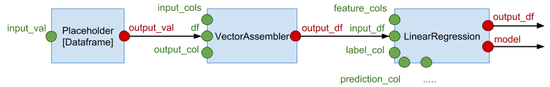

Working with Cebes Pipelines
Construct a Pipeline¶
As an example, here is a script to construct a Pipeline containing a Linear Regression model:
>>> with cb.Pipeline() as ppl: ...: inp = cb.placeholder(cb.PlaceholderTypes.DATAFRAME) ...: assembler = cb.vector_assembler(inp, input_cols=['viscosity', 'proof_cut'], ...: output_col='features') ...: lr = cb.linear_regression(assembler.output_df, ...: features_col='features', label_col='caliper', ...: prediction_col='caliper_predict', ...: reg_param=0.0) ...:
The pipeline is constructed in the with cb.Pipeline() block, which includes a Dataframe placeholder,
a vector assembler and a linear regression stage. The pipeline above can be visualized as follows:

Compared to the code, there are some good magics going on to reduce the verbosity:
- The output slot of the placeholder is omitted, because it only has 1 output slot, which becomes its default output slot.
- The stages are created using functions provided in the main namespace of
pycebeslikecb.vector_assembler,cb.linear_regression, ...
Once constructed, you can check the list of stages in the pipeline:
>>> ppl Pipeline(dataframeplaceholder_0, vectorassembler_0, linearregression_0) >>> ppl.stages {'dataframeplaceholder_0': DataframePlaceholder(input_val=None,name='dataframeplaceholder_0'), 'linearregression_0': LinearRegression(...), 'vectorassembler_0': VectorAssembler(...)}
ppl.stages is a dict mapping the stage name to the actual Stage object. Stage names can be
specified in the name argument in all functions that create pipeline stages. When unspecified
like above, Cebes will automatically pick names for the stages, based on the type of the stage.
Names are useful because you can use them to access the stage objects:
>>> ppl['linearregression_0'] LinearRegression(input_df=SlotDescriptor(name='output_df',is_input=False), solver='auto',weight_col=None,tolerance=1e-06,standardization=True,reg_param=0.0, max_iter=10,fit_intercept=True,elastic_net_param=0.0,aggregation_depth=2, features_col='features',label_col='caliper',prediction_col='caliper_predict', name='linearregression_0')
You don't need to construct the whole pipeline in a single with block. For example,
let's add an evaluator stage like so:
>>> with ppl: ...: rmse = cb.rmse(lr.output_df, label_col='caliper', prediction_col='caliper_predict', ...: name='evaluator') >>> ppl.stages {'dataframeplaceholder_0': DataframePlaceholder(input_val=None,name='dataframeplaceholder_0'), 'evaluator': RegressionEvaluator(...), 'linearregression_0': LinearRegression(...), 'vectorassembler_0': VectorAssembler(...)}
You always need to use a with block to add new stages into a pipeline. Without the context manager,
Cebes doesn't know which pipeline is being referred to.
Run a Pipeline for training¶
Let's first load the sample dataset and perform some preprocessing so that it can be used in the pipeline above.
Note that those preprocessing step actually can also be done using Pipeline API. We use Dataframe API here for brevity.
>>> df = cb.get_default_session().load_test_datasets()['cylinder_bands'] >>> df2 = df.drop(*(set(df.columns) - {'viscosity', 'proof_cut', 'caliper'})) >>> df2 = df2.dropna(columns=['viscosity', 'proof_cut', 'caliper']) >>> df2.show() ID: 25a139f8-4a27-442f-8a95-d8b0cd528c75 Shape: (466, 3) Sample 5 rows: proof_cut viscosity caliper 0 55.0 46 0.200 1 55.0 46 0.300 2 62.0 40 0.433 3 52.0 40 0.300 4 50.0 46 0.300
A Pipeline is executed using its run() method, in which we need to provide value to the
placeholder, and specify the list of output slots we want to receive the result.
In this case, we are feeding df into the inp placeholder, and retrieved the final
Dataframe, the trained model, the Dataframe after featurization and the RMSE score:
>>> predicted_df, lr_model, assembled_df, rmse_val = ppl.run( ...: [lr.output_df, lr.model, assembler.output_df, rmse.metric_value], feeds={inp: df2}) Request ID: 08228dc8-2bce-45a1-a13e-353726e45646 >>> predicted_df.show() ID: 294ab9a2-0b84-4cf9-97b4-de4cd4be9901 Shape: (466, 5) Sample 5 rows: proof_cut viscosity caliper features caliper_predict 0 55.0 46 0.200 [46.0, 55.0] 0.273678 1 55.0 46 0.300 [46.0, 55.0] 0.273678 2 62.0 40 0.433 [40.0, 62.0] 0.266757 3 52.0 40 0.300 [40.0, 52.0] 0.261072 4 50.0 46 0.300 [46.0, 50.0] 0.270836 >>> lr_model Model(id='5ed5e8bd-579d-4ae0-a932-718da9064c36', model_class='io.cebes.spark.pipeline.ml.regression.LinearRegressionModel') >>> assembled_df.show() ID: 541814c7-738b-436b-8479-f385ad4edc49 Shape: (466, 4) Sample 5 rows: proof_cut viscosity caliper features 0 55.0 46 0.200 [46.0, 55.0] 1 55.0 46 0.300 [46.0, 55.0] 2 62.0 40 0.433 [40.0, 62.0] 3 52.0 40 0.300 [40.0, 52.0] 4 50.0 46 0.300 [46.0, 50.0] >>> rmse_val 0.06898695718445916
If the placeholder is not fed, an exception will be thrown:
>>> predicted_df, lr_model, assembled_df, rmse_val = ppl.run( ...: [s.output_df, s.model, assembler.output_df, rmse.metric_value]) ServerException: ('DataframePlaceholder(name=dataframeplaceholder_0): Input slot inputVal is undefined', ...)
By callling run(), the model will be estimated, then used to compute the final
Dataframe, the RMSE score is also computed.
Inference¶
Once trained, the pipeline can now be used for inference, using exactly the same API:
>>> df3 = df2.where(df2.proof_cut > 50) >>> df3_predicted, df3_rmse = ppl.run([s.output_df, ppl['evaluator']], feeds={inp: df3}) Request ID: 4c8524a3-0112-479c-8ad0-e021dbac2566 >>> df3_predicted.show() ID: f03d6c2a-7518-453e-81bf-c56a59e94021 Shape: (100, 5) Sample 5 rows: proof_cut viscosity caliper features caliper_predict 0 55.0 46 0.200 [46.0, 55.0] 0.280963 1 55.0 46 0.300 [46.0, 55.0] 0.280963 2 62.0 40 0.433 [40.0, 62.0] 0.252337 3 52.0 40 0.300 [40.0, 52.0] 0.265102 4 65.0 43 0.333 [43.0, 65.0] 0.258353 >>> df3_rmse 0.07246338467430166
Under the hood, Cebes does this in a non-trivial way. The trained model is actually stored
in a stateful output slot. In the second run() call, only the input Dataframe changes,
which is a stateless input slot, hence the model will not be re-trained.
The model is only re-trained if you change the parameters in the LinearRegression stage,
which can be done using the feeds argument in the run() call. Although the parameters
were specified at construction time, you can always overwrite them using the feeds mechanism.
Run a pipeline asynchronously¶
In the above, you execute ppl.run() and waits for the result to come back. Since the
dataset is small, this can be done in a few seconds. For bigger datasets, training might
take days or hours. In this case, waiting for the result like above is not practical.
Cebes provides functions to get the result of pipeline execution asynchronously.
T.B.A
Tag a Pipeline¶
Let's tag the pipeline so we can reuse it later:
>>> sess = cb.get_default_session() >>> sess.pipeline.tag(ppl, 'linear_regression') >>> sess.pipeline.list() UUID Tag Created # of stages ------------------------------------ ------------------------- -------------------------- ------------- 7d364b33-cc0b-4c96-9ecb-e2e48fa8d94f linear_regression:default 2017-12-31 21:13:49.207000 4
See this section for more on managing pipelines.
Using Models¶
The resulting model can be use to transform arbitrary input Dataframe, as long as it has the correct schema:
>>> lr_model.transform(assembled_df).show() ID: c1aaddeb-3646-4934-8f75-029a20fe542c Shape: (466, 5) Sample 5 rows: proof_cut viscosity caliper features caliper_predict 0 55.0 46 0.200 [46.0, 55.0] 0.273678 1 55.0 46 0.300 [46.0, 55.0] 0.273678 2 62.0 40 0.433 [40.0, 62.0] 0.266757 3 52.0 40 0.300 [40.0, 52.0] 0.261072 4 50.0 46 0.300 [46.0, 50.0] 0.270836 >>> lr_model.transform(df2).show() ServerException: ('Field "features" does not exist.', ...)
df2 is not valid because it has not been vectorized by VectorAssembler, and therefore does not have the
features column. This example shows why it is often more useful to use a whole pipeline, instead of
the individual models.
Similar to Pipelines, you can also tag a Model:
>>> sess.model.tag(lr_model, 'linear_regression') Model(id='5ed5e8bd-579d-4ae0-a932-718da9064c36',model_class='io.cebes.spark.pipeline.ml.regression.LinearRegressionModel') >>> sess.model.list() UUID Tag Created Model class ------------------------------------ ------------------------- -------------------------- ----------------------------------------------------------- 5ed5e8bd-579d-4ae0-a932-718da9064c36 linear_regression:default 2018-01-06 01:14:59.294000 io.cebes.spark.pipeline.ml.regression.LinearRegressionModel